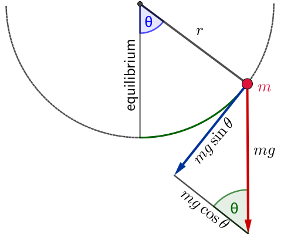
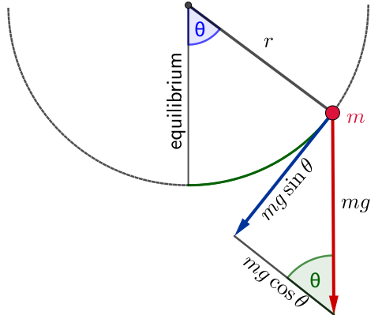

Multivariate Calculus
&
Ordinary Differential Equations
Lecture 15
1 Ordinary Differential Equations
1.8.7 The pendulum
Some of you may have seen those beautiful old pendulum clocks. In such a clock a pendulum of mass $m$ is suspended from a pivot by a long, thin metal rod.
1 Ordinary Differential Equations
1.8.7 The pendulum
Now suppose that the pendulum moves in an arc of a circle with radius $r$. If the pendulum makes an angle (say in the anti-clockwise direction) $\theta$ with its equilibrium position, then it has travelled a distance $r \theta$ from this position.
1 Ordinary Differential Equations
1.8.7 The pendulum
According to Newton's second law of motion
$ \ds m \frac{\dup^2}{\dup t^2}(r\theta)=F,$
where $F$ is the force in the direction of motion.
1 Ordinary Differential Equations
1.8.7 The pendulum
According to Newton's second law of motion
$ \ds m \frac{\dup^2}{\dup t^2}(r\theta)=F,$
where $F$ is the force in the direction of motion.
Hence
$\ds rm \frac{\dup^2\theta}{\dup t^2}=-mg\sin\theta.$
1 Ordinary Differential Equations
1.8.7 The pendulum
$\ds rm \frac{\dup^2\theta}{\dup t^2}=-mg\sin\theta.$
 

1 Ordinary Differential Equations
1.8.7 The pendulum
$\ds rm \frac{\dup^2\theta}{\dup t^2}=-mg\sin\theta.$
This is a nonlinear ODE which displays very interesting nonlinear behaviour. If we however assume that $\theta$ is very small (the pendulum does not swing very far out, unlike your little sister on the swing perhaps), then we have $\sin\theta\simeq \theta$.
$\sin x\simeq x$
1 Ordinary Differential Equations
1.8.7 The pendulum
$\ds rm \frac{\dup^2\theta}{\dup t^2}=-mg\sin\theta$ $\;\Ra \ds \frac{\dup^2\theta}{\dup t^2}=-\frac{g}{r}\sin\theta$ $\ds\approx -\frac{g}{r}\theta.$
This is a nonlinear ODE which displays very interesting nonlinear behaviour. If we however assume that $\theta$ is very small (the pendulum does not swing very far out, unlike your little sister on the swing perhaps), then we have $\sin\theta\simeq \theta$. Making this approximation we get
$\ds \frac{\dup^2\theta}{\dup t^2}+\frac{g}{r}\,\theta=0.$
Setting $g/r=\omega^2$ as before we obtain the same ODE describing simple harmonic motion.
1 Ordinary Differential Equations
1.8.7 The pendulum
Question: What is the period of the undamped pendulum?
$\ds \frac{\dup^2\theta}{\dup t^2}+\frac{g}{r}\,\theta=0$ $\,\Ra\,\ds \lambda^2 + \frac{g}{r} = 0$ $\ds\Ra \lambda = \pm i \sqrt{\frac{g}{r} }$
So the solution is
$\ds \theta(t) = c_1 \cos\left(\sqrt{\frac{g}{r}}\cdot t\right) + c_2 \sin\left(\sqrt{\frac{g}{r} }\cdot t\right) $
Period is given by $\ds \sqrt{\frac{g}{r}} T = 2 {\large \pi}\;$ $\ds \Ra T = \frac{ 2 {\large \pi} }{\sqrt{\dfrac{g}{r}}}.$
1 Ordinary Differential Equations
1.8.7 The pendulum
👉 $\;\ds \frac{\dup^2\theta}{\dup t^2}+\frac{g}{r}\,\theta=0$
Remark: It is interesting to note that the ODE describing the undamped pendulum does not depend on the mass of the pendulum.
🤔
1 Ordinary Differential Equations
1.8.7 The pendulum
As before one can make the model more realistic by assuming damping proportional to velocity.
Example: If the damping constant is $\gamma$ show that this leads to the ODE
$\theta''+2p\,\theta'+\omega^2 \theta=0,$
where $\ds \;\omega^2=\frac{g}{r}>0, \; 2p=\frac{\gamma}{m}>0.$
😃 If you are curious, the solution is provided in handwritten notes!
Extra note about the pendulum
Can we solve the ODE: $\,\ds \frac{\dup^2\theta}{\dup t^2}+\frac{g}{r}\sin\theta=0?$ 🤔
Rewrite it as
$\ds \frac{\dup^2\theta}{\dup t^2}=-\frac{g}{r}\sin\theta.$
Multiplying both sides by $\ds\frac{\dup\theta}{\dup t}$ we get
$\ds \frac{\dup\theta}{\dup t} \cdot \frac{\dup^2\theta}{\dup t^2}=-\frac{g}{r}\sin\theta\cdot \frac{\dup\theta}{\dup t}.$
Extra note about the pendulum
Can we solve the ODE: $\,\ds \frac{\dup^2\theta}{\dup t^2}+\frac{g}{r}\sin\theta=0?$ 🤔
$\ds \frac{\dup\theta}{\dup t} \cdot \frac{\dup^2\theta}{\dup t^2}=-\frac{g}{r}\sin\theta\cdot \frac{\dup\theta}{\dup t}.$
Integrating both sides with respect to $t$:
$\ds \int \left( \frac{\dup\theta}{\dup t} \cdot \frac{\dup^2\theta}{\dup t^2}\right) \dup t=-\frac{g}{r}\int \left(\sin\theta\cdot \frac{\dup\theta}{\dup t}\right)\dup t.$
Evaluating we obtain:
$\ds \frac{1}{2}\left(\frac{\dup\theta}{\dup t}\right)^2=\frac{g}{r}\cos\theta +c_1.$
Extra note about the pendulum
Can we solve the ODE: $\,\ds \frac{\dup^2\theta}{\dup t^2}+\frac{g}{r}\sin\theta=0?$ 🤔
$\ds \frac{1}{2}\left(\frac{\dup\theta}{\dup t}\right)^2=\frac{g}{r}\cos\theta +c_1.$
Then
$\ds \left(\frac{\dup\theta}{\dup t}\right)^2=\frac{2g}{r}\cos\theta +2c_1\,$ $\Ra \ds \frac{\dup\theta}{\dup t}=\pm\sqrt{\frac{2g}{r} \cos\theta +c_2}$
😃 A separable ODE: $\,\ds \frac{1}{\sqrt{\frac{2g}{r}\cos\theta +c_2}}\frac{\dup\theta}{\dup t} = \pm 1.$
Extra note about the pendulum
Can we solve the ODE: $\,\ds \frac{\dup^2\theta}{\dup t^2}+\frac{g}{r}\sin\theta=0?$ 🤔
😃 A separable ODE: $\,\ds \frac{1}{\sqrt{\frac{2g}{r}\cos\theta +c_2}}\frac{\dup\theta}{\dup t} = \pm 1.$
Integrating both sides with respect to $t$:
😵💫 ? $\,=$ $\ds\int \frac{1}{\sqrt{\frac{2g}{r}\cos\theta +c_2}}\dup\theta = \pm \int \dup t$ $= \pm t+ c_3.$
LHS integral is not! $\qquad $ RHS integral is easy!
Extra note about the pendulum
Can we solve the ODE: $\,\ds \frac{\dup^2\theta}{\dup t^2}+\frac{g}{r}\sin\theta=0?$ 🤔
The integral
$\ds\int \frac{1}{\sqrt{\frac{2g}{r}\cos\theta +c_2}}\dup\theta $
is a particular case of the non elementary integral
$\ds\int \frac{1}{\sqrt{a\cos x +b}}\dup x $ $\ds= \frac{2}{\sqrt{a+b}} F\left(\frac{x}{2} \Bigg.\Bigg\vert \frac{2a}{a+b}\right)+C$
where $F$ is the elliptic integral of the first kind.
Multiple 🌈 Pendulums Simulation: $\,\theta''+2p\,\theta'+\omega^2 \theta=0\,$
😃
1 Ordinary Differential Equations
1.8.8 Main points
- You should know how to derive and solve the equations of motion for a damped oscillator given just the mass, damping and spring constants.
- You should also be able to classify the motion into under, over or critically damped, and know what these notions mean.
1 Ordinary Differential Equations
1.9 Inhomogeneous Linear Second-Order ODEs
1.9.1 Inhomogeneous linear second-order ODEs with constant coefficients
Inhomogeneous second-order ODEs, also known as ODEs with forcing, are covered in Stewart in Section 17.2. They are very common in applications and often they require a bit of ingenuity to solve.
We will only consider inhomogeneous linear second-order ODEs with constant coefficients, i.e., equations of the form
$ay''+by'+cy=r(x),$
where $r$ is a continuous function.
1 Ordinary Differential Equations
1.9.1 Inhomogeneous linear second-order ODEs with constant coefficients
$ay''+by'+cy=r(x),$
First we outline the general strategy of solving such equations.
- First set $r(x)=0$ and solve the corresponding homogeneous ODE. Its solution, $y_H(x)=c_1 y_1(x)+ c_2 y_2(x),$ is known as the complementary function.
- Find a solution, $y_P(x)$ to the inhomogeneous equation. Any solution will do and goes by the name of a particular function.
- The general solution to the inhomogeneous equation is then given by
$y(x)=y_H(x)+y_P(x).$
1 Ordinary Differential Equations
1.9.2 Method of Undetermined Coefficients
When the functional form of $y_p$ is known, the ODE can be solved using undetermined coefficients.
We will show how to do this when the inhomogeneous term $r(x)$:
- is a polynomial.
- is a polynomial times an exponential.
- is a sum of terms.
- is a simple trigonometric function.
1 Ordinary Differential Equations
1.9.3 $r(x)$ is a polynomial
Example: Solve the ODE \[ y''+y'-2y= x^2-2x+3. \] The polynomial on the right hand side is of degree 2. Let's first "guess" that the functional form of $y_p$ is also a polynomial of degree 2, with unknown coefficients.
We write $y_p=ax^2+bx+c.$
Differentiate this function 2 times to get
$\ds \begin{align*} y_p'&=2ax+b \\ y_p''&=2a. \end{align*} $
1 Ordinary Differential Equations
1.9.3 $r(x)$ is a polynomial
$\ds
y''+y'-2y= x^2-2x+3,$
$y_p = ax^2+bx+c,\;
y_p'=2ax+b,\;
y_p''=2a.
$
Substituting back in to the ODE, we get
$2a+(2ax+b)-2(ax^2+bx+c) =x^2-2x+3.$
Expanding, and grouping like powers of $x$ together yields
$-2ax^2+(2a-2b)x+(2a+b-2c)=x^2-2x+3.$
Two polynomials are equal if and only if their coefficients are also equal.
1 Ordinary Differential Equations
1.9.3 $r(x)$ is a polynomial
This gives us three equations and 3 unknowns, which we can solve.
$ \quad -2a =1$ $\implies a=-1/2\;$
$2a-2b =-2$ $\implies b=1/2 \;\;$
$2a+b-2c =3$ $\implies c=-7/4.\quad\;\;\;$
Thus,
$\ds y_p =-\frac{1}{2}x^2+\frac{1}{2}x-\frac{7}{4}.$
1 Ordinary Differential Equations
1.9.3 $r(x)$ is a polynomial
So our initial guess was correct. The ODE's right hand side was a quadratic, and so was the particular solution. But where did our guess come from?
Theorem: Consider an ODE of the form $ay^{\prime\prime}+by^\prime+cy=r(x)$, with $c \ne 0$.
If $r(x)$ is a polynomial of degree $n$, $y_p$ is also.
1 Ordinary Differential Equations
1.9.3 $r(x)$ is a polynomial
To see this, suppose we have an ODE of the form
$ ay^{\prime\prime}+by^\prime+cy =\sum_{j=0}^n \alpha_jx^j, $
with $a,b,c \ne 0.$
We can differentiate both sides $n$ times with respect to $x$;
$\ds \frac{d^n}{dx^n}\left(ay_p^{\prime\prime}+by_p^\prime+cy_p\right)$ $\ds=\frac{d^n}{dx^n}\sum_{j=0}^n \alpha_jx^j$
$ay_p^{(n+2)}+by_p^{(n+1)}+cy_p^{(n)}=n!\alpha_n.$
1 Ordinary Differential Equations
1.9.3 $r(x)$ is a polynomial
$ay_p^{(n+2)}+by_p^{(n+1)}+cy_p^{(n)}=n!\alpha_n.$
Since we don't require the most general solution, we may take $y_p^{(n)}$ to be a constant, which implies $y_p^{(n+1)}=y_p^{(n+2)}=0.$
This yields;
$\ds \;\; y_{p}^{(n)}$ $\ds =\frac{n!\alpha_n}{c}$ $\ds =d_1$
$\ds y_{p}^{(n-1)}$ $\ds=\int d_1 \, dx=d_1x+d_2$
1 Ordinary Differential Equations
1.9.3 $r(x)$ is a polynomial
$\ds \;\; y_{p}^{(n)}$ $\ds =\frac{n!\alpha_n}{c}$ $\ds =d_1$
$\ds y_{p}^{(n-1)}$ $\ds=\int d_1 \, dx=d_1x+d_2$
$\ds y_{p}^{(n-2)}$ $\ds=\int d_1x+d_2 \, dx$ $\ds=\frac{d_1}{2}x^2+d_2x+d_3$
$\qquad \;\vdots$
$\ds \;\; \;\; y_{p}$ $\ds =\frac{d_1}{n!}x^n+\frac{d_2}{(n-1)!}x^{n-1}+\dots +d_n.$
1 Ordinary Differential Equations
1.9.3 $r(x)$ is a polynomial
Example: Find a particular solution of $\, 3y''-2y'+4y=2x^3+1$.
Our guess: $\; y_p = a x^3+ bx^2 + cx + d$
📝 Find $a, b, c, d.$
📝 Use the method of undertermined coefficients to show that
$\ds y_p = \frac{x^3}{2}+ \frac{3x^2}{4} - \frac{3x}{2} - \frac{13}{8} $